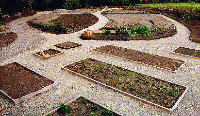

Introduction History Spring Tour Other Seasons Companion Plants Fruit/Veg/Herbs Work Family Links ARS Visiting the Garden Design Elements SPECIMENS TIPS GARDEN FURNITURE
Herbs as Landscaping More in The Herb Garden Fruit Vegetables as Landscaping
| We created the herb and vegetable gardens in 1998. The curves of the herb garden form a transition between the vegetable boxes and the rhododendron beds and paths. |
 |
|
The herb and vegetable beds were raised with loam from digging out the paths. Sand and humus were added to loosen the soil, and perforated plastic pipe was placed under all paths (as it was in the entire garden) to increase drainage. Posts for the grape and berry arbors have just been set. |
Introduction History Spring Tour Other Seasons Companion Plants Fruit/Veg/Herbs Work Family Links ARS Visiting the Garden Design Elements SPECIMENS TIPS GARDEN FURNITURE
© 2001 by John and Doreen Anderson